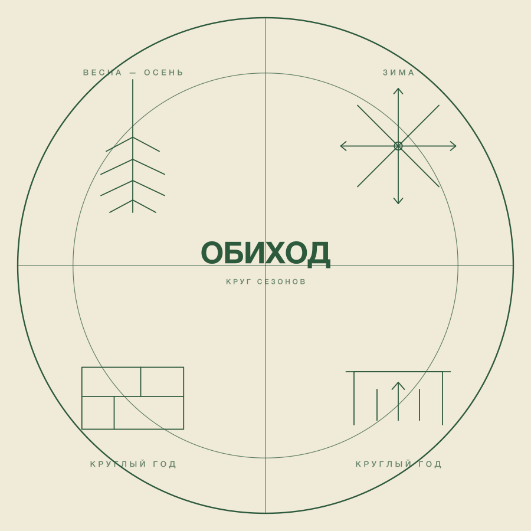
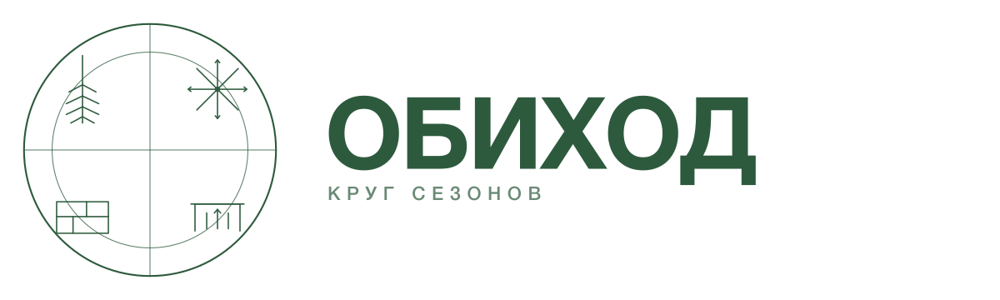
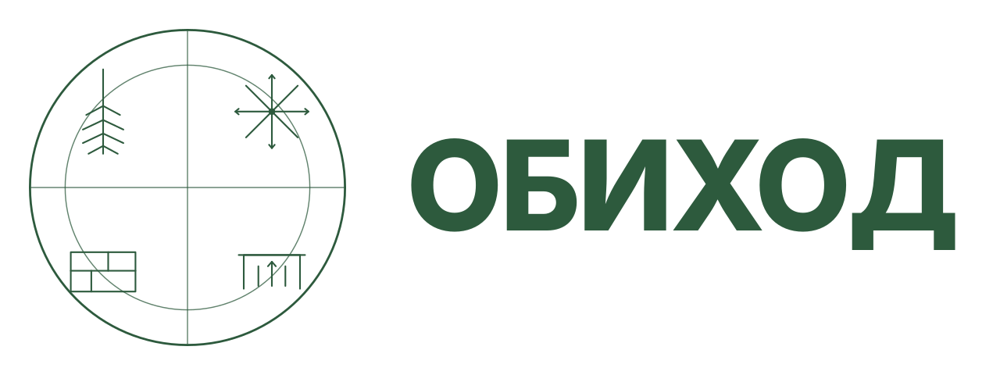
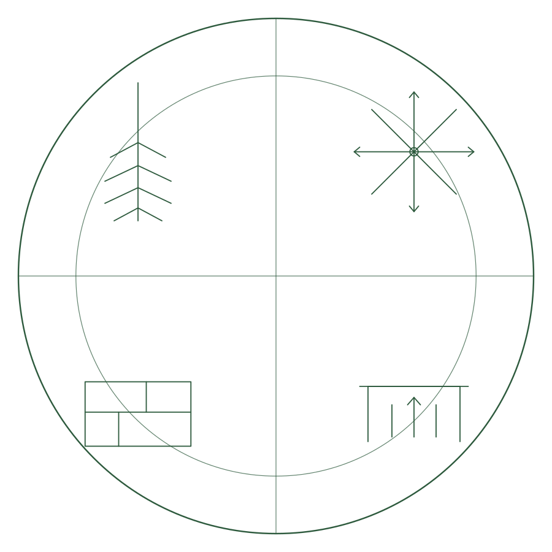
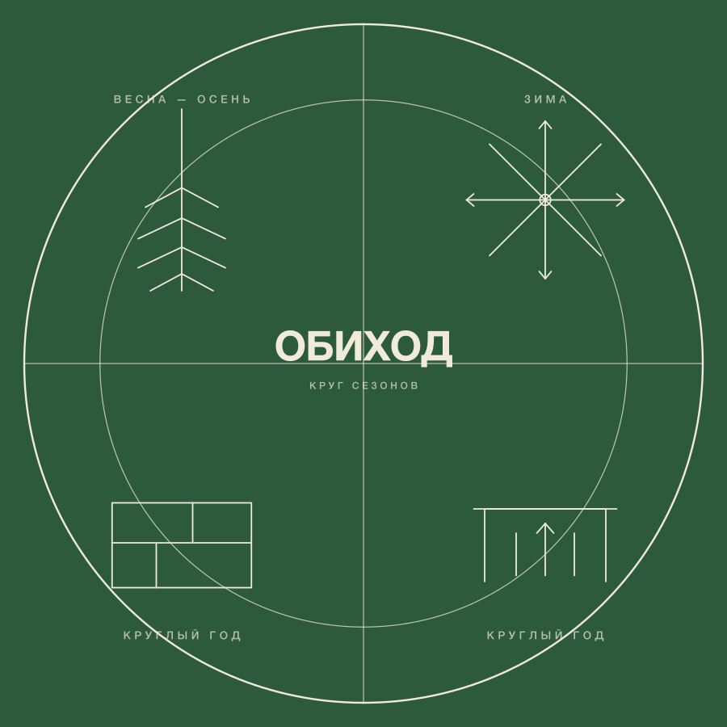
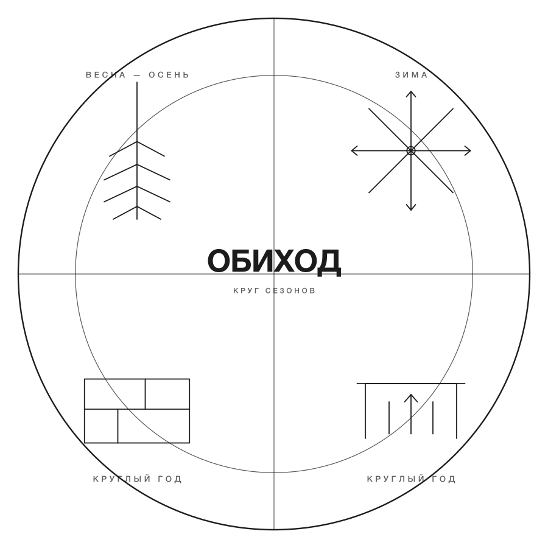
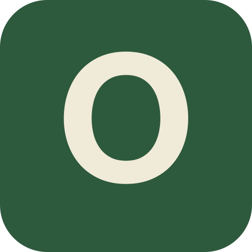
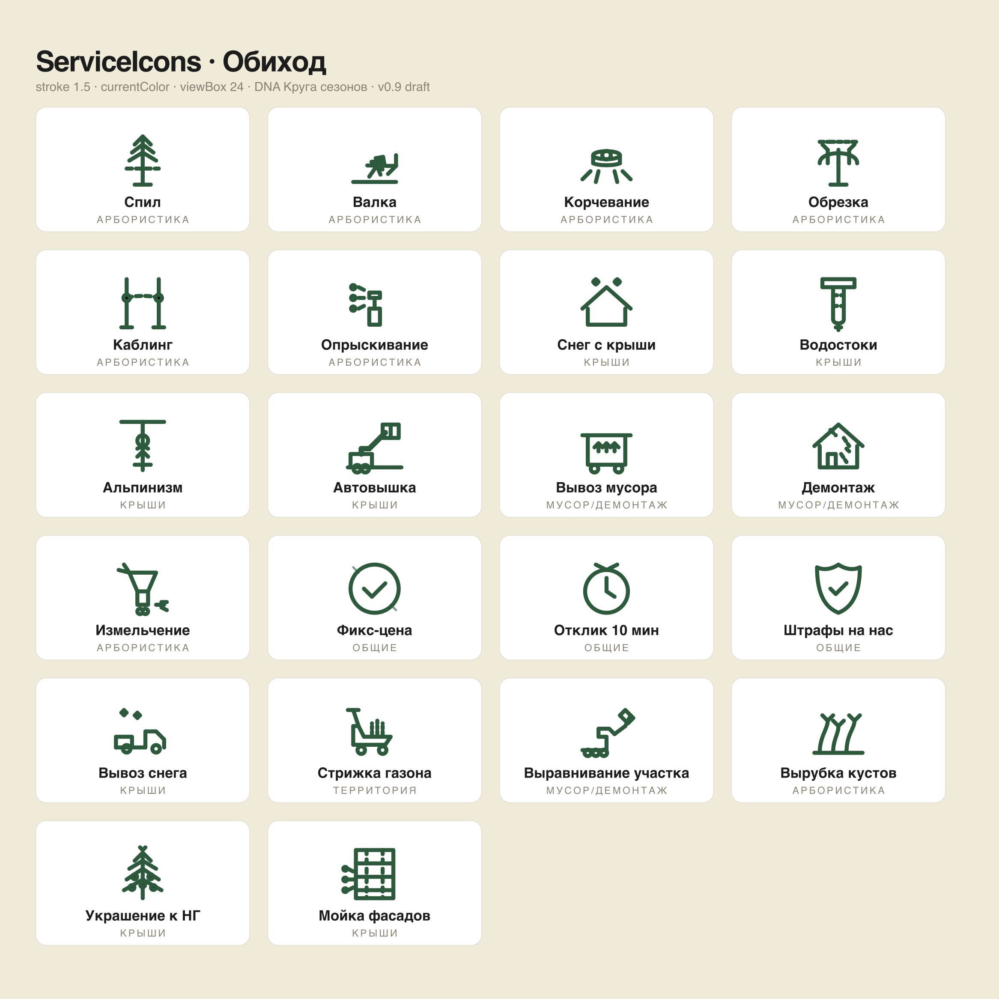

Комплексный подрядчик 4-в-1 для Москвы и МО: арбористика, чистка крыш, вывоз мусора, демонтаж. Архетип Caregiver + Ruler. Этот документ — единая точка входа для дизайнера, копирайтера, фронтендера и любого нового агента команды.
Хозяйство в надёжных рукахВыжимка из бренд-стратегии. Детали, scorecard финалистов и обоснование выбора — в 03_brand_naming.md.
Для владельцев загородных домов и управляющих компаний в Москве и Подмосковье, которые устали от фрагментированного поиска подрядчиков и смет «от X ₽», Обиход — комплексный сервис 4-в-1 по фиксированной цене за объект, со сметой за 10 минут в мессенджере и юридической ответственностью за штрафы ГЖИ/ОАТИ.
Caregiver (70%) — забота о хозяйстве, защита от проблем, «мы присмотрим».
Ruler (30%) — порядок, контроль, компетентность.
Отвергнуто: Outlaw (Дровосек/Лесорубы), Jester (Грузовичкоф), Explorer (Liwood).
Порядок под ключ — операционное кредо.
Хозяйство в надёжных руках — эмоциональное обещание.
Фикс-цена за объект · смета за 10 минут по фото · абонемент «зима-лето» · штрафы ГЖИ/ОАТИ на подрядчике.
Финальный знак утверждён 2026-04-24. Мастер — agents/brand/logo/master.svg. Полный пакет (mark, horizontal, mono, inverse, mark-simple для favicon) + guide — в agents/brand/logo/usage.md. Инженерный чертёж-циркуляр: внешний круг, крест делит на 4 квадранта сезонного цикла — весна-осень (ёлочка), зима (снежинка-роза ветров), круглый год (план двора), круглый год (навес с вывозом). Archetype Ruler через схему, Caregiver через «круглый год».

master lockup · master.svg 1200×1200

horizontal full · horizontal.svg 1600×480 · marketing-hero, визитки, email-подписи (≥ 80 px по высоте)

horizontal compact · horizontal-compact.svg 1280×480 · website header, footer, embed (32–60 px по высоте)

mark (без текста) · mark.svg · OG, avatar ≥ 128 px

inverse · inverse.svg · тёмный фон, стикеры на технике

mono (ч/б) · mono.svg · печать, документы

mark-simple · mark-simple.svg
favicon / apple-touch / Telegram / admin sidebar
Полный usage-guide с matrix min-размеров, clear-space, запрещённого — в agents/brand/logo/usage.md.
| Правило | Значение | Почему |
|---|---|---|
| Horizontal lockup — какой когда | horizontal.svg с tagline «КРУГ СЕЗОНОВ» — только при высоте ≥ 80 px (marketing-hero, визитки, email-подпись, OG). Везде ниже — horizontal-compact.svg (без tagline) | На 32–60 px tagline становится 3–6 px и превращается в нечитаемые точки — визуальный мусор. Compact = mark + wordmark, без tagline, читается на 32 px |
| Минимальный размер полного знака | mark.svg — 64 px; LogoMark компонент — 36 px | Ниже 36 px 4 глифа сливаются; ниже 64 px без упрощения уже каша |
| Минимальный размер favicon | mark-simple.svg — 16 px (app/icon.png 32×32) | Монограмма «О» читается до favicon-размера |
| Фон master / mark | кремовый #f0ead8 или белый #ffffff | Бренд-зелёный на кремовом — аутентичный контраст «бумага-чернила» |
| Фон inverse | тёмно-зелёный #2d5a3d (primary), линии кремовые | Для тёмной темы и стикеров на тёмной технике |
| Clear-space | ≥ высоте «О» в wordmark; ≥ 1/8 диаметра круга вокруг знака | Знак — штамп, требует воздуха чтобы читаться |
| Нельзя | растягивать, перекрашивать вне палитры, outline, shadow, glow, gradient, копировать отдельные элементы круга | Знак работает только целиком; декор ломает чертёжную эстетику |
Токены живут в site/app/globals.css и пробрасываются в Tailwind v4 через @theme inline — доступны как utility bg-primary, text-ink-soft, border-line.
--c-primary · bg-primary#2d5a3d--c-primary-ink#1f3f2b · hover on primary--c-accent · bg-accent#e6a23c · бейджи, акцент--c-accent-ink#c18724 · текст на bg--c-ink · text-ink#1c1c1c · заголовки--c-ink-soft#2b2b2b · body--c-muted#8c8377 · caption, placeholder--c-bg#f7f5f0 · основной фон--c-bg-alt#efebe0 · чередование--c-card#ffffff--c-line#e6e1d6 · границы--c-success#4a7c59--c-error#b54828--c-on-primary#f7f5f0 · текст поверх primaryВизуальный бриф в 03_brand_naming.md описывает палитру как «тёмный графит + тёплый песок + приглушённый терракот / густая охра». Фактическая палитра в globals.css — зелёный + янтарный + кремовый. Это решение имплементации; бриф остаётся как исторический контекст. Источник истины — код. При ребрендинге пересматриваются оба артефакта синхронно.
Приёмка цветовых пар по WCAG 2.1/2.2: AA normal text = 4.5:1, AA large text (18px+ bold / 24px+) = 3:1, AAA normal = 7:1.
| Пара | Пример | Ratio | Normal | Large | Где применяется |
|---|---|---|---|---|---|
ink на bg |
Обиход | 15.1 : 1 | AAA | AAA | Весь body-текст, заголовки |
on-primary на primary |
Позвонить | 8.9 : 1 | AAA | AAA | Primary-кнопки, бейджи |
primary на bg |
Обиход | 7.1 : 1 | AAA | AAA | Ссылки, иконки, eyebrow |
ink-soft на bg-alt |
строка таблицы | 13.8 : 1 | AAA | AAA | Чередование таблиц |
muted на bg |
подпись | 4.1 : 1 | AA✕ | AA | Только large / caption; избегать body |
accent-ink на bg |
Черновик | 4.7 : 1 | AA | AAA | Статусы, warning-бейджи |
accent на bg |
не для текста | 2.3 : 1 | AA✕ | AA✕ | Только фоновые акценты, иконки 24+ |
error на bg |
Ошибка | 5.4 : 1 | AA | AAA | Сообщения валидации, delete |
Фокус-outline — всегда accent 2px с offset 2px (см. .btn:focus-visible в globals.css). Этот приём безопасен, потому что outline идёт по большой площади кнопки, а не является текстом.
Display и body — Golos Text (создан специально для кириллицы, открытая лицензия SIL OFL). Mono — JetBrains Mono для цен (tabular-nums), таймеров, eyebrow. Подключены через next/font с display: swap.
Реальные классы из site/app/globals.css. Все размеры адаптивные через clamp().
.h-display · 48/96 px · 700 · ls -0.035em
.h-xl · 36/64 px · 700 · ls -0.03em
.h-l · 28/44 px · 600
.h-m · 22/28 px · 600
.h-s · 20 px · 600
.lead · 17/22 px · 400 · ink-soft
body · 16-17 px · 400 · line-height 1.55
.eyebrow · 11-12 px mono · ls 0.14em · uppercase · muted
.mono.tnum · цена — JetBrains Mono 500 с tabular-nums
Плотная — админка инструмент, не витрина. Подробности и обоснование — в devteam/specs/admin-visual/art-concept.md.
| Элемент | Размер | Вес | Комментарий |
|---|---|---|---|
| Collection-view heading | 22 px | 600 | Без letter-spacing |
| Field label | 13 px | 500 | letter-spacing: 0.02em |
| Field value | 14 px | 400 | |
| Table row | 13 px | 400 | line-height 1.35 |
| Button | 13 px | 600 | min-height 32 px |
radius-sm — инпуты, бейджи, code. radius — кнопки, карточки, модалки. radius-lg — hero-блоки, большие карточки кейсов. Pill — только для status-badge и chat-bubble.
| Токен | Значение | Применение |
|---|---|---|
--maxw | 1280 px | Максимальная ширина .wrap |
--pad (< 768) | 20 px | Мобильные отступы |
--pad (> 768) | 40 px | Планшет |
--pad (> 1200) | 80 px | Десктоп |
min-height 44 px (WCAG 2.5.5 touch target) · focus-outline 2 px accent · hover на primary → primary-ink.
Позвоним в течение 10 минут в рабочее время (8:00–22:00 МСК).
Тополь / берёза / сосна до 25 м. Смета за 10 минут по фото. Порубочный билет — наша зона.
Domain-специфичные иконки услуг Обихода в эстетике Круга сезонов. Реестр и правила — design-system/icons/services/README.md. Компонент — ServiceIcons.tsx.

| Параметр | Значение | Почему |
|---|---|---|
| viewBox | 0 0 24 24 | Единый base-размер, масштабируется через width/height |
| stroke-width | 1.5 (default), 1.2 на 16 px, 2 на 48+ | Балансирует читабельность и аккуратность |
| stroke-linecap / linejoin | round | Мягкие концы = Caregiver, без техничной резкости |
| fill | none (stroke-only) | Чертёжная эстетика Круга сезонов |
| color | currentColor | Наследуется от родителя через color: var(--c-primary) |
| dasharray | для «динамики» (трос каблинга, течение воды) | Разграничение статики и процесса |
spil, valka, stump, prune, kabling, spray, chipper
roof-snow, gutter, climber, boomlift
dumpster, demolition
fixed-price, fast-response, legal-shield
Приоритет использования: brand-glyphs из Круга сезонов → service-иконки (этот раздел) → lucide-react для общих UI (phone, message, chevron) → custom только по согласованию с art. Полный foundation — design-system/foundations/icons.md.
Дефолтный тип для Обихода. Infinite scroll / «Показать ещё» на SEO-страницах запрещены — теряем индексацию. Полный spec — pagination.spec.md.
24 кейса · страница 3
На первой странице — Prev disabled:
На последней — Next disabled:
<head>Страница 1 → canonical без /page/1/. Страницы 2+ → self-canonical с полным URL. Google с 2019 не использует rel=next/prev, Яндекс — читает. Для ruen-first проекта обязательно.
Ломает SEO (страницы не индексируются), back-кнопку, a11y. На Обиходе запрещён.
Так же плохо для SEO. Допустим только на FAQ / отзывах — не на контенте для поисковиков.
<button> ломает right-click «Открыть в новой вкладке» и SEO. Только <a href>.
«1 2 3 4 … 98 99 100» всё в ряд — нечитаемо. Обязательно … в пропусках.
Формы сбора заявок — главный конверсионный механизм. После отправки пользователь должен точно знать что заявка ушла, куда ждать ответ и что делать если что-то не так. Полный spec — feedback-states.spec.md, копи — microcopy.md.
Главный сценарий. Форма целиком заменяется на success-card, не просто toast сверху. Пользователь получает ID заявки крупно (скопирует в мессенджер), понимает что дальше и может сразу перейти в Telegram или позвонить.
Заявка принята
ОБИ-2026-00042
Напишем в Telegram на +7 985 170 51 11 за 10 минут.
Средний отклик сегодня — 7 минут.
Для действий где блокирующий success-card избыточен: сохранили черновик, добавили фото, ошибка валидации на одном поле. Позиция: top-right (desktop) / top-center full-width (mobile). Auto-dismiss для polite, постоянный для assertive (ошибки).
Черновик сохранён
Примеры: «Фото добавлено (3 из 6)», «Телефон сохранён в профиле».
Заявка не ушла — проверьте интернет
Написать в TelegramФормула: что не так + что сделать. Без «упс» и «извините».
large.heic больше 20 МБ — сожмите или пришлите в мессенджер
Не критично, но требует действия. На границе между success и error.
Средний отклик сегодня — 7 минут
Социальное доказательство / статус. Не блокирует, но полезно знать.
Добавим после ближайшего выезда. Пока — посмотрите кейсы в соседних районах.
Формула: что здесь должно быть + что сделать. Не просто «Пусто» или «No data».
Skeleton повторяет final layout — нет layout shift (CLS). На prefers-reduced-motion shimmer отключён.
pointer-events: none, никаких модалокЧто произошло? Что дальше? Пользователь не должен гадать.
Блокирует UX без причины. Inline success-card на месте формы.
Инфантилизация. Обиход = matter-of-fact.
Ошибка без «что сделать» = frustration. Всегда либо link-action, либо retry.
WCAG 1.4.1. Иконка + текст + цвет — все три одновременно.
Success можно dismiss через 3с, error — только ручным закрытием пользователем.
Паблик и админка Payload живут на одних токенах — это сняли в admin-visual/art-concept.md. В админке поднимаем плотность UI, палитра та же.
| Роль в админке | Payload token | HEX | Сайт-эквивалент |
|---|---|---|---|
| background | --theme-bg | #f7f5f0 | --c-bg |
| surface | --theme-elevation-0/50 | #ffffff | --c-card |
| surface-alt | --theme-elevation-100 | #efebe0 | --c-bg-alt |
| text | --theme-text | #1c1c1c | --c-ink |
| text-soft | --theme-elevation-800 | #2b2b2b | --c-ink-soft |
| text-muted | --theme-elevation-500 | #6b6256 | уточнение --c-muted (WCAG-поднят с #8c8377 → 4.5:1) |
| accent (primary) | --theme-success-500 | #2d5a3d | --c-primary |
| accent-hover | --theme-success-600 | #1f3f2b | --c-primary-ink |
| highlight | — | #e6a23c | --c-accent |
| border | --theme-elevation-200 | #e6e1d6 | --c-line |
| warning | --theme-warning-500 | #c18724 | --c-accent-ink |
| danger | --theme-error-500 | #b54828 | --c-error |
Override живёт в site/app/(payload)/custom.scss на :root[data-theme='light']. Тёмная тема — клон light до MVP-запуска.
Анти-TOV слова блокируются хуком .claude/hooks/protect-immutable.sh — если попытаться закоммитить «в кратчайшие сроки» в site/, хук упадёт.
| Funny | ◄────────────●─────► | Serious | Серьёзный, но не казённый |
| Formal | ◄──────●───────────► | Casual | Деловой с тёплыми вкраплениями |
| Respectful | ◄●──────────────────► | Irreverent | Максимальное уважение |
| Enthusiastic | ◄────────────●──────► | Matter-of-fact | Делом, без восклицаний |
Из визуального брифа 03_brand_naming.md §Визуальная подача + реалии админки из art-concept.md.
Generic-категория эко-подрядчиков. Наш primary — тёмный хвойный, не свежий salad.
Фолк-архаика, территория «Дровосека» и «Лесорубов». Обиход — не про мачо, про порядок.
Ruler-архетип мимо Caregiver-половины. Читается как ЧОП или застройщик премиум-сегмента.
B2B-штамп 2010-х, обесценивает обещание «ответственность по договору».
Хипстерская ассоциация, ломает корпоративную приёмку в УК/ТСЖ.
Фотостиль — документальный, реальные бригады на реальных объектах. Никаких catalog-shot на белом.
Лубочная «русскость». Кириллица и Golos Text уже несут код, декор — перебор.
Payload-по-умолчанию-фиолетовый-градиент. Плоский #2d5a3d — бренд-штамп.
Hover → primary-ink #1f3f2b (−8% яркости). Не свечение, не скейл.
Tilda / WordPress / Bitrix / MODX / Yii — не обсуждаются. Обоснование — 04_competitor_tech_stacks.md: 54% топ-13 конкурентов на WP/Bitrix с PHP 5.6-7.4 и jQuery 1.10 — это шаг назад, а не к ним.
Этот документ — агрегатор того, что уже зафиксировано в коде и артефактах. Ниже — дыры, которые нужно закрывать явным заказом у art / внешнего дизайнера.
site/app/icon.png 32 + apple-icon.png 180 (Next.js 16 convention) + agents/brand/logo/ icon-192/512/og-mark для PWA и OG.design-system/icons/services/. Покрытие всех 4 кластеров + 3 УТП-бейджа.prune, boomlift, demolition перерисованы (Caregiver-tone, читаемая техника, штриховые срезы/трещины вместо молота).motion.json (durations/eases/presets + guardrails).color-dark в colors.json. Контрасты посчитаны, активация через [data-theme='dark']. Не включена в prod (MVP = light only).foundations/photography.md: типы кадров, свет, кадрирование, forbidden-список (лица / номера / документы), спецификa 4 услуг.foundations/print-materials.md: CMYK/Pantone-таблица, визитки / наклейки / бейджи / бланки, экспорт PDF/X. Калибровка под типографию — после первого заказа.patterns/b2b-pitch-deck.md: структура 12 слайдов, дизайн-правила, экспорт. Первый PDF — отдельный US с данными оператора.district-card.spec.md для programmatic SEO LP 28 районов.file-uploader.spec.md для PhotoQuoteForm (drag-n-drop / HEIC конверсия / S3 upload / security).assets/photos/ brand/ icons-raw/ videos/ temp/ + README + .gitignore для тяжёлых медиа.patterns/programmatic-landing.md: секции, heading hierarchy, JSON-LD (Service + LocalBusiness + BreadcrumbList + FAQPage), canonical / noindex, CWV targets, interlinking. Закрывает главный блокер fe2 для 28 LP.patterns/og-image.md: edge-endpoint /api/og, 5 variants (default / service-district / service-index / blog / case), fonts handling, fallback static.breadcrumbs.spec.md с полной BreadcrumbList-схемой, mobile truncate, TOV для названий.header.spec.md: sticky behavior, mobile drawer, skip-link, phone из SiteChrome, 4-колоночный footer с legal.pagination.spec.md: numbered (default), rel=next/prev, canonical правила для страниц 2+.form-schemas.spec.md: phoneRU / consent / files / messenger + композиты (leadForm, photoQuoteForm, b2bEnquiry). Разблокирует fe1 от дубликата валидации в каждой форме.rel=next/prev.snow-truck, lawn-mower, excavator, brush, winter-decor, facade-clean. Полный набор теперь покрывает 22 услуги из каталога.calculator.spec.md: единая anatomy для 4 калькуляторов (арбористика/крыши/мусор/демонтаж), формулы, states, analytics-события, A/B-план.Дизайн-система закрыла свою часть — spec'и и визуальные примеры готовы. Ниже — работа, которую запускает po как US для fe/be, подключает оператор.
site/lib/forms/ — US fe1+be3 по form-schemas.spec.md. Разблокирует PhotoQuoteForm / LeadForm / B2B-enquiry.site/lib/forms/./uslugi/[cluster]/[district]/ — US fe2 по programmatic-landing.md. Первый LP — Раменское × Арбористика, потом раскатка на 28 seed.header.spec.md + mega-menu.spec.md./api/og — US fe2 по og-image.md.<Button>, <Input>, <Toast>, <Skeleton>, <Pagination>, <Breadcrumbs>, <FileUploader>, <DistrictCard>, <Calculator>. CSS-классы и spec'и есть./admin на prod · логотип — оператор делает pnpm generate:importmap и push → auto-deploy.photography.md.{kind=link}
{kind=link}
{kind=link}
{kind=link}
{kind=link}
{kind=link}
{kind=link}